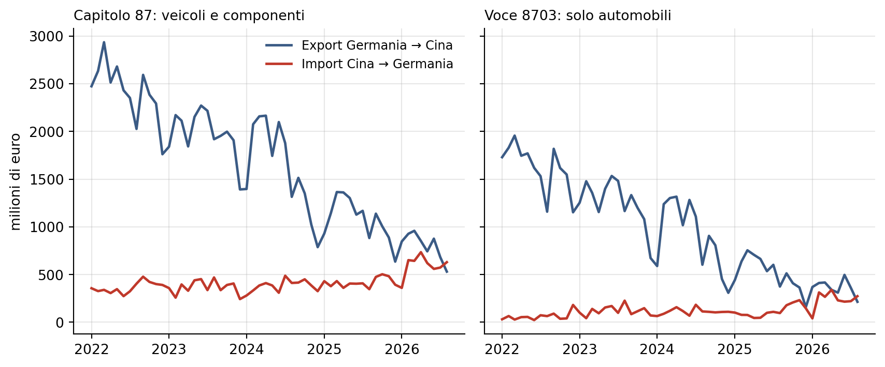
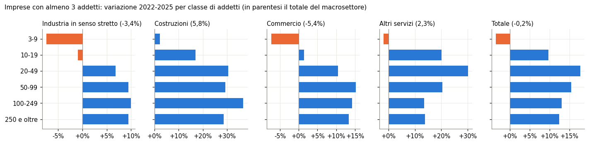
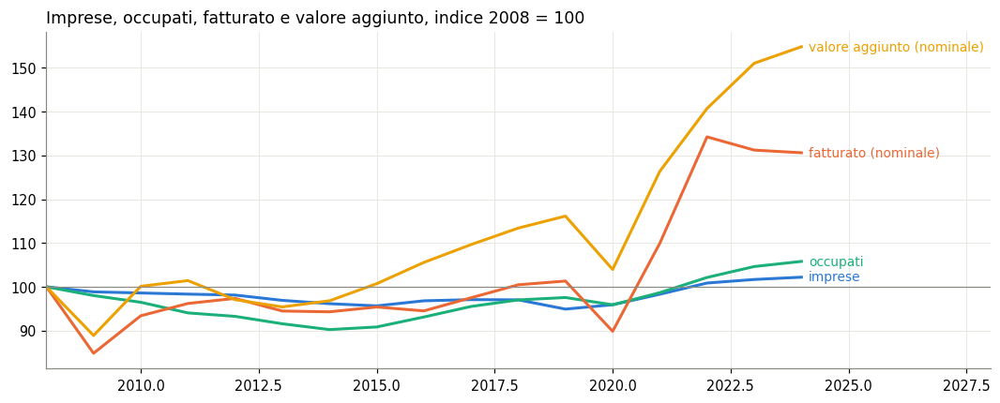
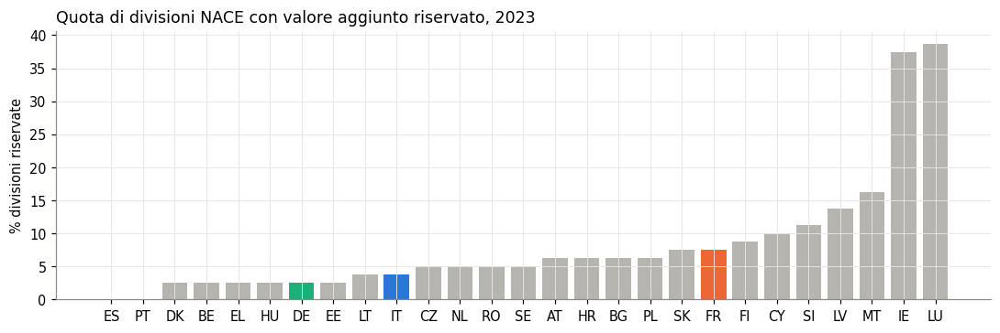

Studi su credito, imprese, commercio estero, finanza pubblica

Nell’agosto 2026 la Germania ha importato dalla Cina più veicoli e componenti di quanti ne abbia esportati: in valore è un solo mese, in numero di auto la Cina è avanti quasi ogni mese dall’autunno 2025, a circa un terzo del valore per auto.

Quante imprese usano fido, prestiti, leasing, garanzie pubbliche e capitale proprio secondo il Censimento Istat 2025, quanto pesano le stesse fonti nei bilanci delle società di capitali (BACH) se il credito va ai settori che innovano e come si colloca l’Italia in Europa (Eurostat CIS, BCE SAFE).
La legge 10 novembre 2025, n.

161_267
I risultati economici delle imprese italiane dal 2008 al 2024 (Istat): imprese, occupati, conto economico e investimenti per attività e classe di addetti.
Che cosa contiene BACH, la base dati dei bilanci aggregati delle società non finanziarie europee: paesi, settori, classi dimensionali, medie ponderate e quartili.

sbs_ovw_act
Le statistiche strutturali sulle imprese di Eurostat (sbs_ovw_act): imprese, occupati, fatturato e valore aggiunto per paese e attività economica dal 2021.
Tutti gli studi →